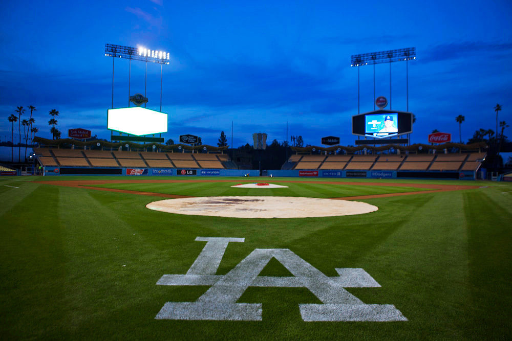
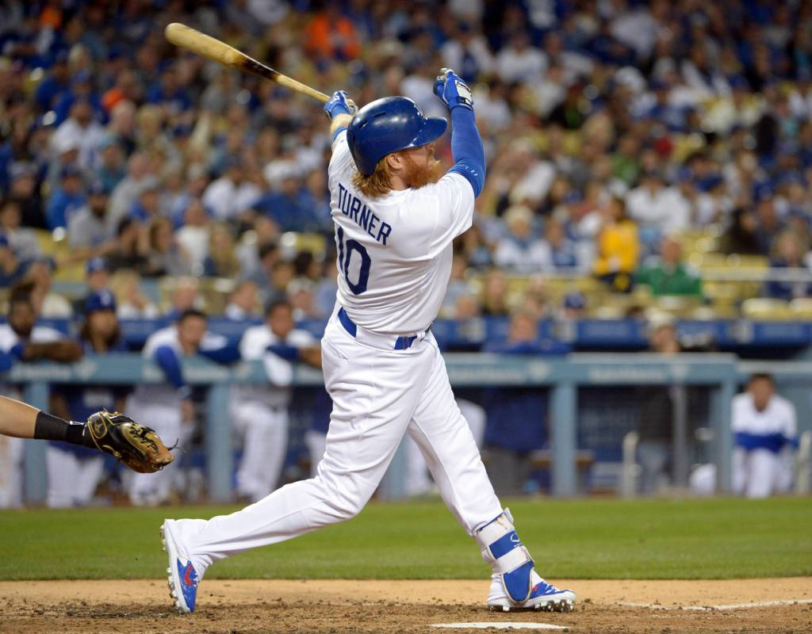
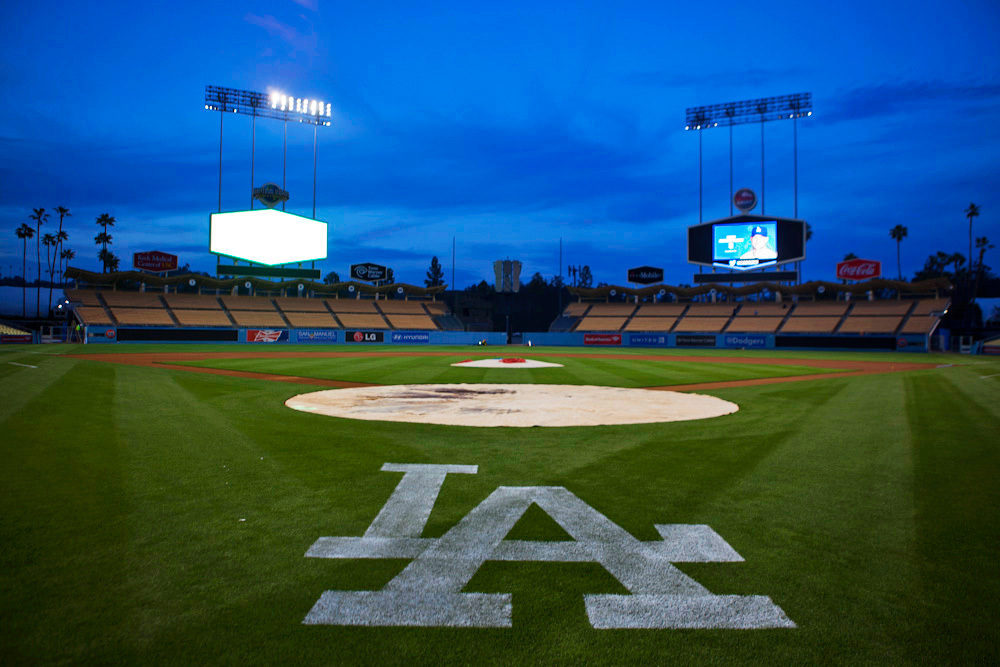
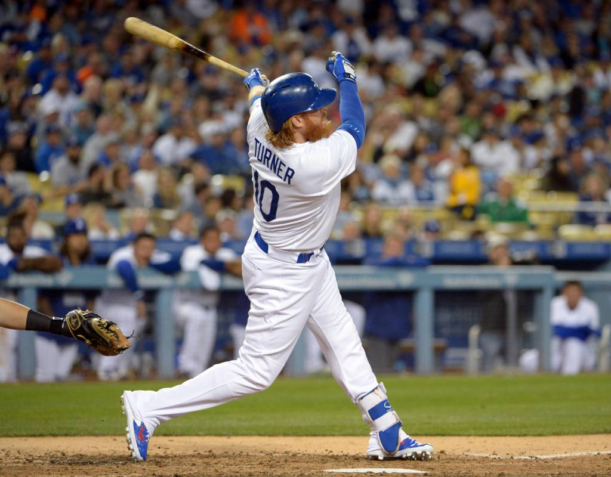

My favorite sport to play is baseball. I play centerfield and pitch for the Shafter High Baseball Team. My favorite baseball team is the Los Angeles Dodgers.  https://scratch.mit.edu/projects/120337407/
